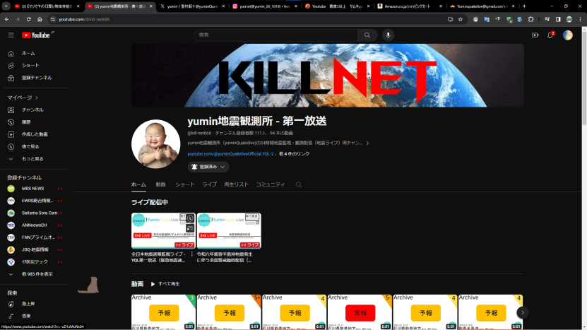

【YouTube乗っ取り被害について（続報）】
— 【公式】yumin地震観測所 - yuminQuakelive (@yuminQuakelive) 2024年1月21日
昨日23時50分頃再度アカウントの乗っ取りが行われていることが判明致しました。
攻撃はロシアのハッカー集団「KILLNET」によるものと見られチャンネルID、アイコン、ヘッダーの変更を確認しました。
対策としてパスワード、パスキーの再発行を行いました。 pic.twitter.com/JVcQV2tMxu
ニュース記事一覧に戻る
©2022 - 2024 yuminQuakelive. All rights reserved.